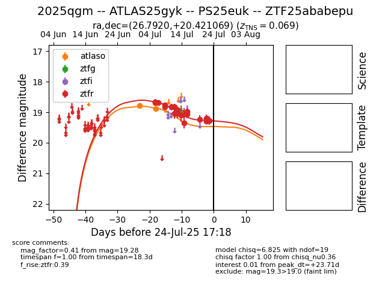

Target 2025qgm at 2025-07-24 17:18, see:
FINK: fink-portal.org/2025qgm
Lasair: lasair-ztf.lsst.ac.uk/objects/2025qgm
ALeRCE: alerce.online/object/2025qgm
TNS: wis-tns.org/object/2025qgm
YSE: ziggy.ucolick.org/yse/transient_detail/2025qgm
alt names
ZTF25ababepu (ztf,fink)
2025qgm (tns,yse)
ATLAS25gyk (atlas)
PS25euk (panstarrs)
coordinates:
equatorial (ra, dec) = (26.7920,+20.42107)
galactic (l, b) = (140.2136,-40.57306)
photometry
last atlaso=18.89, ztfr=19.28
2 atlaso, 19 ztfr detections
